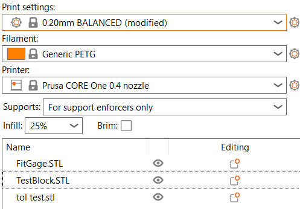
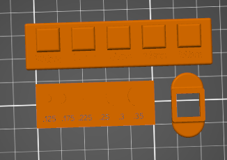
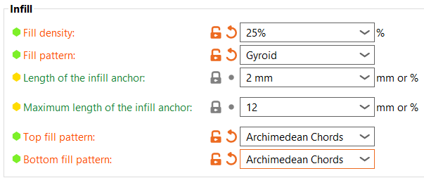
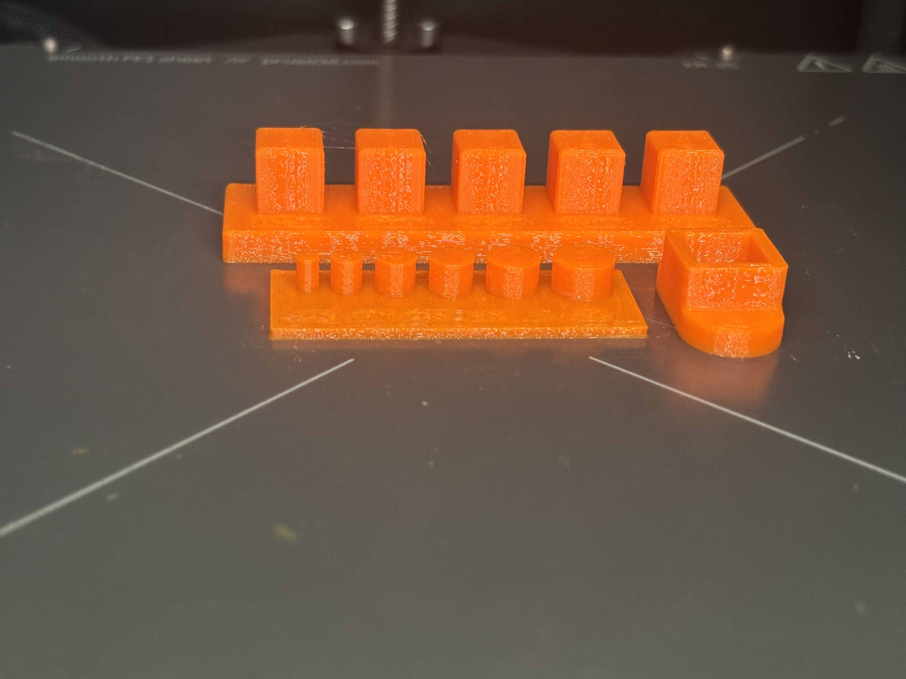
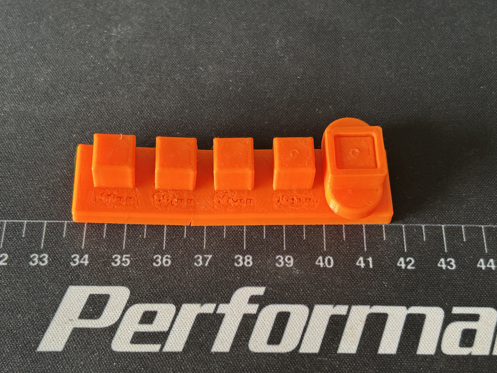

This week's job was to design my own benchmark part to figure out where the Prusa Core One actually hits its limits, then compare what I found to the FDM row of the class Design Rules for 3D Printing chart. The only catch was that the print couldn't go over an hour, since everybody is fighting for time on the machines.
There were four options: overhang angle, pull strength, tolerance gauge, and dimension calibration. I went with the tolerance gauge. Basically the question is, how close does the printed part come to what I drew in CAD?
This one felt the most useful to me. A part can look totally fine and still be off by just enough that it won't go into the thing it's supposed to fit in. If I ever design two pieces that slide or snap together, I need to know how much room to leave between them, and guessing isn't really a plan.
Before designing anything I checked the FDM row of the Design Rules for 3D Printing chart. Two boxes matter for this test:
I also looked at a couple other sources to see if they agreed. Prusa's own FAQ says a well-built Prusa printer should hold about 0.3 mm on X and Y and 0.1 mm on Z, and it can get down to around 0.05 mm with extra calibration. So Prusa and the chart land on the same 0.3 mm for X and Y, which is the direction my pegs get measured in.
The Protolabs Network article on dimensional accuracy is a little more relaxed about desktop FDM machines, giving ±0.5% with a lower limit of ±0.5 mm. It also says plastic usually shrinks somewhere around 0.2 to 1% depending on the material, and it recommends putting radii on sharp edges and corners.
Remember that 0.5 mm of clearance from the chart. It comes back later.
Before printing, I figured the 9.96 mm peg would be the first one to fit. My thinking was that the nozzle on the Core One is 0.4 mm, so I just assumed the dimensional tolerance would be on that same kind of scale, and a peg 0.04 mm under the hole would be enough. Honestly I thought the whole thing was going to fit a lot better than it did.
I went with a peg and socket gauge, split into two parts:
The idea is pretty simple. Try every peg in the socket, and the first one that goes in tells you how much clearance the printer really needs. The 10 mm peg is exactly the size of the hole, so it's there as the "no way this fits" baseline.

Here's what I ran:

Build orientation: Everything is laying flat on the bed. The peg plate has its pegs pointing straight up, and the socket sits flat with the square hole going straight down through it. That way the sides of every peg and the walls of the hole all get printed in X and Y, which is the same direction I measure with the calipers and the same direction the pegs slide into the socket. You can also kind of see in this screenshot how tiny the numbers in front of the pegs are.
Supports: Set to "for support enforcers only," so PrusaSlicer only puts supports where you specifically tell it to. Laying everything flat meant there weren't any overhangs that needed them anyway, and supports touching the pegs or the inside of the hole would've messed with the exact surfaces I was trying to measure.
Brim: Off. The parts are flat with a big footprint on the bed, so they didn't need the extra grip.
Scale: 100%, no scaling up or down. The whole point of the test is to see if the printed size matches the CAD size, so scaling it would've thrown off every single peg and the socket and made the test pointless.
Layer height: 0.20 mm from the BALANCED profile. Layer height mostly affects things in Z, and this test is all about X and Y, so going finer wouldn't have helped much and would've just made the print take longer.

Infill: 25% Gyroid, with the infill anchor at 2 mm and a max anchor length of 12. I also switched the top and bottom fill pattern to Archimedean Chords, which is the spiral looking one. Infill doesn't really matter much for this test since everything I'm measuring is on the outside walls, so 25% is plenty to keep the parts solid and the top surfaces from sagging.
I printed this on Thursday, September 10th on Prusa Core One #2 with my lab partner James McAdam. The print took about 40 minutes, so it made it under the one hour limit with room to spare. Here's the whole thing printing:

And here it is right when it finished. The peg plate with all five pegs is in the back and the socket is on the right. The whole artifact is there to answer one question: which peg is the first one that actually slides into the socket, and how far off is each part from its CAD size?

Mistake: the numbers I cut into the plate were way too small. You can see it in this picture, they came out as little blobs and you can't really read any of them. Looking at the chart afterwards, engraved details on FDM are supposed to be at least 0.6 mm wide and 2 mm high, so that's something I should've checked before slicing.
I measured everything with calipers. They were reading in inches, so I converted it all to millimeters (1 in = 25.4 mm) to keep everything metric. The "room in socket" column is the measured socket hole (10.06 mm) minus the measured peg.
| Part | CAD size | Measured | Difference | % off | Room in socket | Fits? |
|---|---|---|---|---|---|---|
| Peg 1 | 10.00 mm | 10.11 mm | +0.11 mm | +1.1% | −0.05 mm | No |
| Peg 2 | 9.98 mm | 10.06 mm | +0.08 mm | +0.8% | 0.00 mm | No |
| Peg 3 | 9.96 mm | 10.01 mm | +0.05 mm | +0.5% | +0.05 mm | No |
| Peg 4 | 9.94 mm | 9.93 mm | −0.01 mm | −0.1% | +0.13 mm | No |
| Peg 5 | 9.92 mm | 9.91 mm | −0.01 mm | −0.1% | +0.15 mm | Yes (super tight) |
| Socket hole | 10.00 mm | 10.06 mm | +0.06 mm | +0.6% |
Only the 9.92 mm peg went in, and it went in so tight that I can't get it back out. It's pretty much a press fit now, and that's the socket still stuck on the end peg in the picture up in the Print Artifact section. So the smallest designed gap that worked was 0.08 mm total, which is 0.04 mm per side, and even that was too tight for anything that's supposed to come apart.
So why didn't 9.96 and 9.94 fit?
This part confused me at first. The first two pegs make sense, one is bigger than the hole and the other is the same size. But on paper the 9.96 peg had 0.05 mm of room and the 9.94 peg had 0.13 mm, and neither of them would go in.
My best guess is the corners. Looking closely, there's some bulging at the corners of the pegs and inside the socket. When the nozzle goes around a sharp corner it has to slow down and change direction, and a little extra plastic gets pushed out right there. Calipers measure flat side to flat side, so they completely miss those bumps. The peg corners bulge out and the socket corners bulge in, so the two squares end up hitting each other at the corners even when the flat sides have plenty of room.
Was it different from what I thought? Yep. I guessed 9.96 would fit and it wasn't even close. It took going all the way down to 9.92 before anything went in, and that one barely did.
How does it compare to the design rules? For dimensional accuracy the Core One actually did fine. The worst peg was off by 0.11 mm, which is well inside the ±0.3 mm the chart gives for FDM. If you only look at percentages, three of the pegs were over 0.3%, but that's exactly why the chart has the ±0.3 mm lower limit, since percentages get tiny on small parts. So for accuracy, the printer met the spec. It also lands inside Prusa's own 0.3 mm number for X and Y, and way inside the ±0.5 mm the Protolabs Network article gives for desktop FDM.
Where I fell short was clearance. The chart says 0.5 mm between connecting parts, and my biggest designed gap was 0.08 mm. I basically built my whole test inside the range the chart already said wouldn't work, and my results agreed with the chart.
Things I'd change next time:
The print itself took about 40 minutes, and the whole lab took about 3 hours start to finish.
Protolabs, Design Rules for 3D Printing (class PDF)
Prusa Knowledge Base, FAQ (Frequently Asked Questions)
Protolabs Network, What is dimensional accuracy in 3D printing and how do you achieve it?
Peg plate: FitGage.STL
Socket: TestBlock.STL